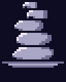

Terry A. Davis
1969 – 2018
He wrote an operating system, a compiler, a graphics stack, a document format and a language. Alone, over about ten years, and he made every one of them follow from a single stated idea.
I think he was making art with it. I am not sure he would have said so, and I am not sure I am right. What I am sure of is that he treated the machine as a medium and not a tool — the sixteen colours were a palette, not a limit — and that the coherence of the result, the way one decision reaches all the way down to the last line, is rarer than the code and harder than the code.
He was ill, and that is in the work, and pretending otherwise would be its own kind of disrespect. It is also not the interesting part, and it is not mine to talk about.
I miss the things he never got to make.
His family asked that people who want to mark his death give to organisations working on mental illness. They named the Brain & Behavior Research Foundation and the National Alliance on Mental Illness.
This page is here because he is worth remembering. Where his work is load-bearing on mine it is cited in §90.2, like any other source.